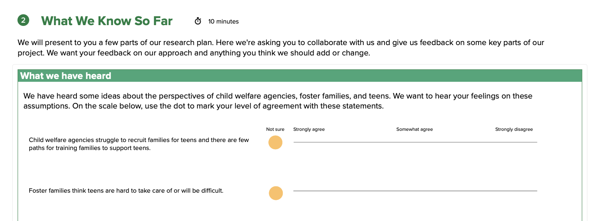

Creating better foster placements for teens
Co-designing with former foster youth to close the placement gap for teens.
The challenge
Child welfare agencies struggle to find and prepare foster families willing to provide teens with long-term, stable placements. Frequent placement changes, and a lack of support has a negative impact on teens and how they are prepared for adulthood when they leave the foster care system.
The goal of this project was to identify strategies to close the gap between the number of teens needing placement and the number of families willing, ready, and able to provide it.
The project
We centered the voices of former foster youth in this project to understand their needs and how they defined successful placements. As one of two user experience researchers on this project, I took a lead role in designing and facilitating participatory and trauma-informed sessions and in recruiting participants. Engagement was designed around three formats to meet youth where they were: 1:1 interactive sessions, a co-design workshop, and self-guided survey responses.
We held interviews with 45 people total which also included subject matter experts, child welfare agency staff, and families to understand how families are recruited and the challenges they faced in supporting teens.

Activity I designed to get youth input on our research plan and assumptions. I was careful to design questions that allowed youth to act as advisors without needing to retell difficult personal history.Insights
We heard that being a teen in foster care is deeply disempowering and many basic needs often go unmet. Youth spoke about lacking autonomy, information and involvement in critical decisions about their lives, and needing more support with practicing skills for adulthood. In a co-design session with teens, we workshopped five recommendations that included:
- Providing better training to foster families
- Supporting youth through transitions
- Offering quality mental health care
- Creating opportunities to build long-term relationships with caring adults
- Providing services to help teens prepare for adulthood
Reflections
Based on previous experience working with youth, I anticipated recruitment would be difficult and it was. I continually followed up, cold called community organizations, conducted outreach on social media, and enabled text reminders to reduce our no show rate. A screener with unique links was used to track which sources yielded the best results.
While we originally wanted to run 2-3 workshops with youth, we responded to youth’s needs by providing flexible 1:1 interactive engagements instead. This tailored recruitment yielded a diverse sample of youth, who described feeling their voices heard in our final workshop.
"Thank you for hearing so many different points of view. This is the first time I’ve been asked to share my thoughts and it felt so nice to just be heard." Former foster youth